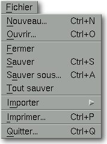
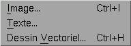

<!-- Documentation Xclamation (c)1994-2000 AXENE contact axene@axene.org>
<html>
<head>
<title>Menu Fichier</title>
</head>

<body BGCOLOR="#FFFFFF" BACKGROUND="Images/back.gif" TEXT="#000000">
<p ALIGN="right">


<p>
<br>
<br>
Le menu déroulant Fichier comporte toutes les fonctions qui nécessitent
l'utilisation de fichiers sur le disque.
<br>
<br>
<hr>
<br>
<center>

<br>
<i><small>
Photo d'écran&nbsp;: Menu déroulant Fichier
</i></small>
</center><p>
<br>
<hr>
<br>
<p>
<h3>Le menu Fichier comporte les entrées suivantes&nbsp;:</h3>
<ul>
  <li><a NAME="new_menu_entry">
     l'entrée <i>&quot;Nouveau...&quot;</i>
     permet de <b>créer un nouveau document</b>. Elle appelle
     la boîte de dialogue '<a HREF="Box_New_Document.html">Nouveau Document</a>'.
     </a><p>
  <li><a NAME="open_menu_entry">
     l'entrée <i>&quot;Ouvrir...&quot;</i> 
     permet de <b>charger un document</b> Xclamation depuis un fichier.
     Elle appelle le sélecteur de fichier 
     '<a HREF="Box_File_Selectors.html#fs_load">Ouverture d'un document</a>'.
     </a><p>
  <li><a NAME="close_menu_entry">
     l'entrée <i>&quot;Fermer&quot;</i>
     permet de <b>fermer le document actif</b>. Si ce document a été
     modifié depuis sa dernière sauvegarde, une boîte
     de dialogue proposera de le sauver.
     </a><p>
  <li><a NAME="save_menu_entry">
     l'entrée <i>&quot;Sauver&quot;</i>
     permet de <b>sauvegarder le document actif</b> sous son nom d'origine.
     Si aucun nom n'a été préalablement donné au document, le
     sélecteur de fichier 
     '<a HREF="Box_File_Selectors.html#fs_save">Sauvegarde du document sous...</a>'
     apparaîtra pour saisir le nom du fichier.
     </a><p>
  <li><a NAME="save_as_menu_entry">
     l'entrée <i>&quot;Sauver sous...</i>&quot; 
     permet de <b>sauvegarder le document actif sous un
     autre nom</b> que celui d'origine. Elle appelle le sélecteur de fichier 
     '<a HREF="Box_File_Selectors.html#fs_save">Sauvegarde du document sous...</a>'.
     </a><p>
  <li><a NAME="save_all_menu_entry">
     l'entrée <i>&quot;Tout sauver&quot;</i> 
     permet de <b>sauver tous les documents</b> ouverts ayant
     subi des modifications. Si un document a un nom, il sera sauvé
     sous ce nom, sinon le sélecteur de fichier 
     '<a HREF="Box_File_Selectors.html#fs_save">Sauvegarde du document sous...</a>'
     sera ouvert.
     </a><p>
  <li><a NAME="import_menu_entry">
     l'entrée <i>&quot;Importer&quot;</i> ouvre sur le sous-menu&nbsp;:
     <p>
     <center>
     
     </center>
     <p>
     <ol>
       <li><a NAME="import_image_menu_entry">
	  l'entrée <i>&quot;Image...</i>&quot; 
	  permet d'<b>importer une image</b> dans le ou les
	  cadres sélectionnés du document actif. Elle ouvre
	  le sélecteur de fichier 
	  '<a HREF="Box_File_Selectors.html#fs_import_image">Importation d'image</a>'.
	  </a><p>
       <li><a NAME="import_text_menu_entry">
	  l'entrée <i>&quot;Texte...&quot;</i> 
	  permet d'<b>importer un texte</b> dans le ou les
	  cadres sélectionnés du document actif. Elle ouvre
	  le sélecteur de fichier
	  '<a HREF="Box_File_Selectors.html#fs_import_text">Importation de texte</a>'.
	  </a><p>
       <li><a NAME="import_vector_menu_entry">
	  l'entrée <i>&quot;Dessin Vectoriel...&quot;</i> 
	  permet d'<b>importer un dessin vectoriel</b>
	  dans le ou les cadres sélectionnés du document actif.
	  Elle ouvre le sélecteur de fichier
	  '<a HREF="Box_File_Selectors.html#fs_import_vector">Importation de dessin vectoriel</a>'.
	  </a><p>
     </ol>
     </a><p>
  <li><a NAME="print_menu_entry">
     l'entrée <i>&quot;Imprimer...&quot;</i> 
     permet d'<b>imprimer le document</b> actif. Elle appelle la boîte de dialogue
     '<a HREF="Box_Print.html">Impression</a>'.
     </a><p>
  <li><a NAME="quit_menu_entry">
     l'entrée <i>&quot;Quitter...&quot;</i> 
     permet de <b>quitter Xclamation</b>. Si des documents n'ayant
     pas été sauvés sont encore ouverts, une
     boîte de dialogue s'ouvrira pour chacun d'eux afin de proposer
     leur sauvegarde. Finalement, une boîte de confirmation s'ouvrira 
     pour valider la sortie d'Xclamation.
     </a></p>
</ul>
<br>
<hr>
<p ALIGN="right">
<p>
</body>
</html>


